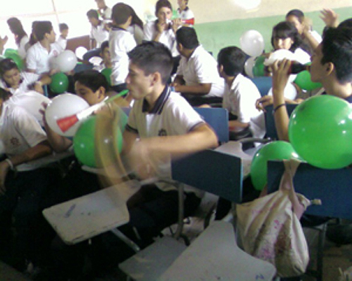

|
|
|
Mi adolescencia
En la secundaria comencé a desarróllame físicamente, crecí mas de altura, bajé más peso, me salieron muchos barros, me cambió la voz, pero además cambié psicológicamente también, al igual que todos mis compañeros, ya empezaba a querer salir y tomar decisiones por mí mismo y hacerme responsable de las consecuencias que tuviera, me gustaba divertirme mucho con mis compañeros, me gustaba llevármela en fiestas o visitando a mis amigos, fue una etapa llena de cambios y de adaptación.
En la mayoría de mi adolescencia me la pasaba en xv años con mis amigos, algunos eran de quinceañeras que ni conocíamos y entrabamos de colados, nos divertíamos muchísimo.
En preparatoria ya había cambiado un poco más físicamente, ya no estaba tan delgado, había embarnecido más, aún seguía con mi misma actitud de antes, aun me gustaba salir con mis amigos aunque ya no lo hacía tan seguido como antes.
En mi último año de preparatoria ya casi no tuve cambios físicos pero si mentalmente, yo ya era más responsable, quería tomar mis propias decisiones y enfrentar las consecuencias, también ya no tenía demasiados amigos, solo me quedaba con algunos pocos porque empezaba a valorar a las personas que de verdad me apreciaban a mí.